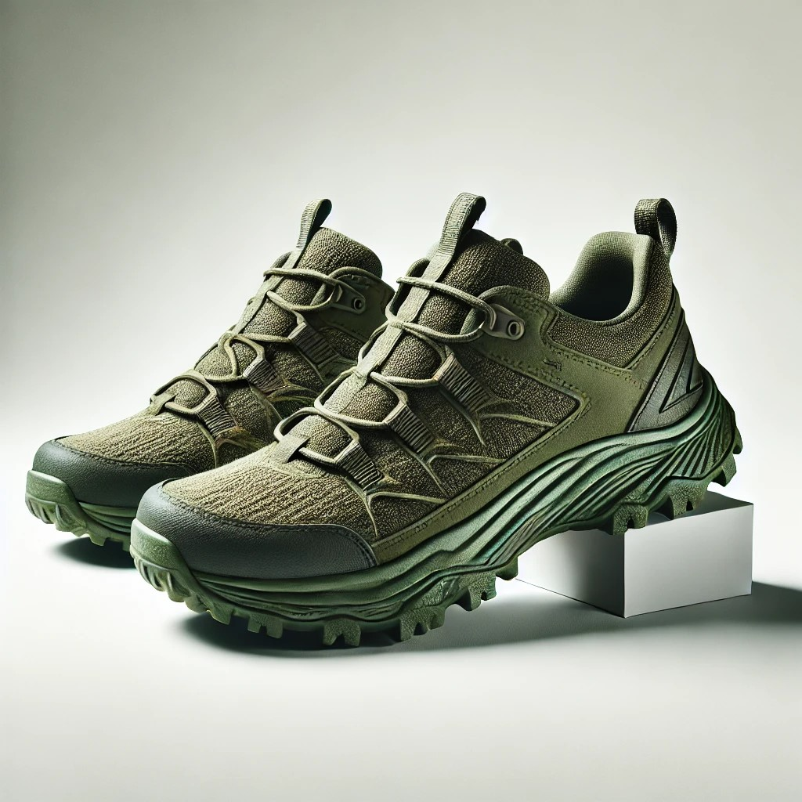

Price: $39.99
The minimalist urban sneaker combines recycled ocean plastic uppers with a lightweight cork sole, offering a sleek and breathable design perfect for everyday wear. Its clean, modern aesthetic and eco-conscious materials make it an ideal choice for those seeking sustainable style and comfort in urban settings.

Price: $69.99
This rugged hiking sneaker features water-resistant hemp uppers and algae-based soles, providing durability, grip, and comfort for outdoor adventures. Designed for eco-conscious explorers, it pairs natural, renewable materials with robust performance to handle both trails and light trekking.